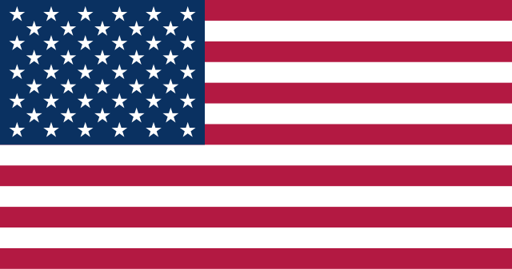

En el ámbito del diseño y desarrollo, he adquirido conocimientos que me permiten crear experiencias digitales atractivas y funcionales. Desde la conceptualización de interfaces intuitivas hasta la implementación técnica en proyectos web y aplicaciones, combino creatividad y precisión técnica para entregar soluciones que destacan por su usabilidad y estética.
Mi experiencia en programación y gestión de bases de datos me permite desarrollar soluciones tecnológicas eficientes y adaptables. Desde la creación de funcionalidades interactivas hasta la organización y optimización de datos, estas habilidades son esenciales para garantizar el rendimiento y la escalabilidad de los proyectos digitales que desarrollo.
Mi experiencia en tecnologías emergentes me permite explorar y desarrollar soluciones innovadoras en áreas como la Realidad Aumentada (AR), Realidad Virtual (VR), Metaverso y el diseño en entornos virtuales, así como la integración de Blockchain. Estas tecnologías no solo ofrecen experiencias inmersivas, sino que también abren nuevas posibilidades para crear interfaces interactivas, plataformas descentralizadas y entornos digitales colaborativos. Estoy comprometido con el aprovechamiento de estas herramientas para diseñar experiencias transformadoras y escalables que impulsen la evolución de los proyectos digitales en los que trabajo.
Mis habilidades blandas me permiten interactuar de manera efectiva con otros, abordar desafíos complejos y adaptarme a entornos dinámicos. Desde la resolución eficiente de problemas y la comunicación clara y concisa, pasando por el pensamiento creativo y crítico para generar soluciones innovadoras, hasta la colaboración efectiva en equipos de trabajo y la gestión integral de proyectos, culminando con la adaptabilidad a las nuevas tecnologías para mantenerme a la vanguardia, estas capacidades se complementan para asegurar el éxito en diversos contextos profesionales y personales.

Lengua materna.

Dominio avanzado/intermedio. Capaz de comprender y comunicarme con fluidez en la mayoría de las situaciones, tanto escritas como orales.
Nivel pre-intermedio. Actualmente en proceso de aprendizaje. Puedo comprender frases sencillas y expresarme en situaciones cotidianas básicas.